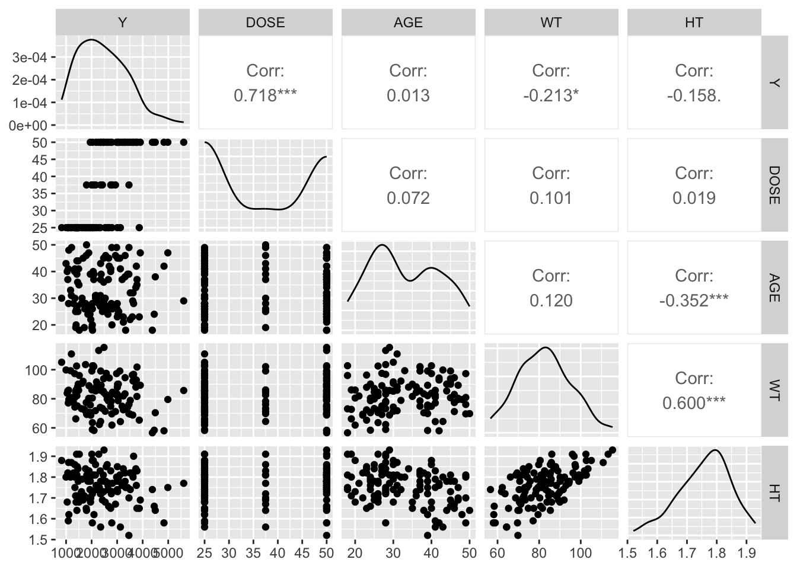
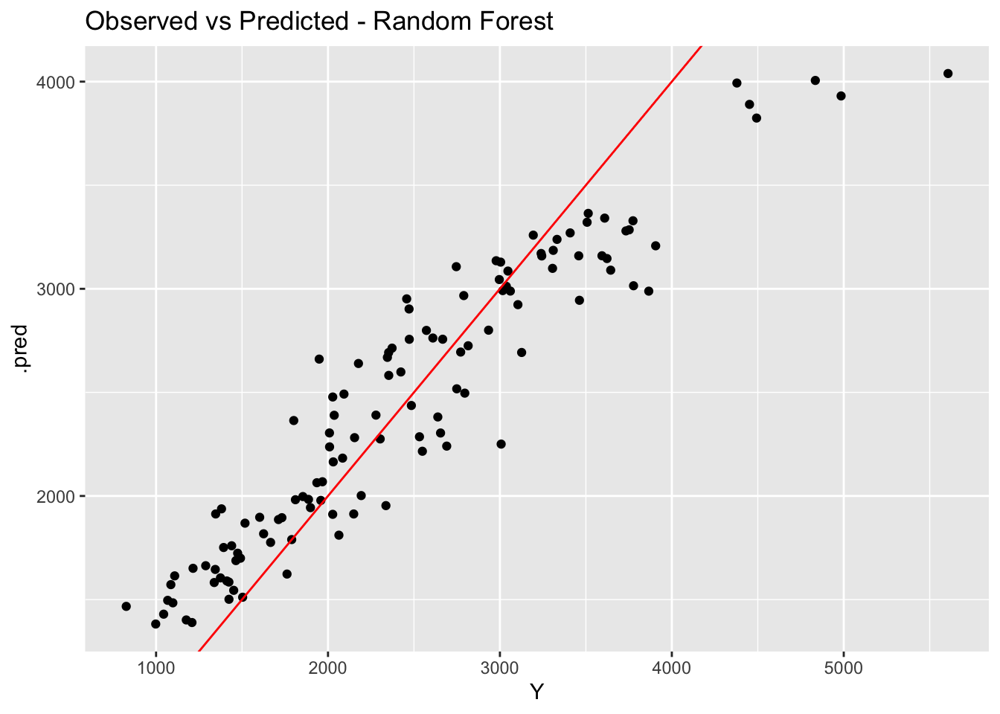

── Conflicts ────────────────────────────────────────── tidyverse_conflicts() ──
✖ dplyr::filter() masks stats::filter()
✖ dplyr::lag() masks stats::lag()
ℹ Use the conflicted package (<http://conflicted.r-lib.org/>) to force all conflicts to become errors
library(dplyr)library(tidyr)library(gtsummary)
Warning: package 'gtsummary' was built under R version 4.4.3
library(GGally)library(glmnet)
Loading required package: Matrix
Warning: package 'Matrix' was built under R version 4.4.3
Attaching package: 'Matrix'
The following objects are masked from 'package:tidyr':
expand, pack, unpack
Loaded glmnet 4.1-10
library(ranger)
Warning: package 'ranger' was built under R version 4.4.3
library(yardstick)#Set seed for reproducibilityset.seed(1234)rngseed <-1234
#Load the datamldata <-readRDS("analysis_fittingdata.rds")#Mutate data so that RACE is a value of 1, 2 or 3##Convert race to a numeric valueml_fittingdata <- mldata %>%mutate(RACE =as.numeric(as.character(RACE)),RACE =case_when( RACE %in%c(7, 88) ~3,TRUE~ RACE ),RACE =factor(RACE),SEX =factor(SEX) ) %>%select(Y, DOSE, AGE, SEX, RACE, WT, HT)#Develop a pairwise correlation for the continuous variables in this dataset##Select the continuous variablescontinuous_vars <- ml_fittingdata %>%select(where(is.numeric))#Make the correlation plotggpairs(continuous_vars)

Compute the BMI variable
#BMI formula#BMI = (weight(kg)) / ((height(m))^2)#It appears weight is in kilograms and height is in meters in this dataset, so use the formula as is to calculate BMIml_fittingdata <- ml_fittingdata %>%mutate(BMI = WT / ( (HT)^2 ) )
Fit Models using TidyModels Workflows/Recipes
#Create recipe to be used in later models, using Y as the predicted variable and all other variables as predictorsrecipe <-recipe(Y ~ ., data = ml_fittingdata) %>%step_dummy(all_nominal_predictors()) %>%step_normalize(all_numeric_predictors())#Generate Linear Model##Create Linear Modellinear_model <-linear_reg() %>%set_engine("lm")##Create workflow for linear model incorporating the previously created recipelinear_workflow <-workflow() %>%add_model(linear_model) %>%add_recipe(recipe)##Fit the linear model to the data to make predictionslinear_fit <-fit(linear_workflow, data = ml_fittingdata)#Generate LASSO Model##Create LASSO Modellasso_model <-linear_reg(penalty =0.1, mixture =1) %>%set_engine("glmnet")##Create workflow for LASSO model incorporating the previously created recipelasso_workflow <-workflow() %>%add_model(lasso_model) %>%add_recipe(recipe)##Fit the LASSO model to the data to make predictionslasso_fit <-fit(lasso_workflow, data = ml_fittingdata)#Generate Random Forest Model##Create Random Forest Modelforest_model <-rand_forest() %>%set_engine("ranger", seed = rngseed) %>%set_mode("regression")##Create workflow for Random Forest model incorporating the previously created recipeforest_workflow <-workflow() %>%add_model(forest_model) %>%add_recipe(recipe)##Fit the Random Forest model to the data to make predictionsforest_fit <-fit(forest_workflow, data = ml_fittingdata)
Evaluations of the three models
#Create a function which will evaluate the model by generated RMSE values after providing which fitted model is being used, the data it was fit to, and the name of the modelevaluate_model <-function(fit, data, name) { preds <-predict(fit, data) %>%bind_cols(data) rmse_val <-rmse(preds, truth = Y, estimate = .pred)print(paste(name, "RMSE:"))print(rmse_val)ggplot(preds, aes(x = Y, y = .pred)) +geom_point() +geom_abline(slope =1, intercept =0, color ="red") +labs(title =paste("Observed vs Predicted -", name))}#Run evaluate_model for the Linear, LASSO and Random Forest Modelsevaluate_model(linear_fit, ml_fittingdata, "Linear Model")
[1] "Linear Model RMSE:"
# A tibble: 1 × 3
.metric .estimator .estimate
<chr> <chr> <dbl>
1 rmse standard 572.
[1] "Random Forest RMSE:"
# A tibble: 1 × 3
.metric .estimator .estimate
<chr> <chr> <dbl>
1 rmse standard 381.

The likely reason the linear model and LASSO model provided the same RMSE is because the predictors we used included all of the variables, meaning that the relevant features were selected and that there were no penalties applied to the model.
Tuning the Models
LASSO Tuning with no Cross Validation
#Define a grid of parameters in a tibblepenalty_grid <-tibble(penalty =10^seq(-5, 2, length.out =50))#Tune the LASSO model using the new penalty gridlasso_tune_model <-linear_reg(penalty =tune(), mixture =1) %>%set_engine("glmnet")##Create workflow for LASSO model incorporating the previously created recipelasso_tune_workflow <-workflow() %>%add_model(lasso_tune_model) %>%add_recipe(recipe)##Fit the LASSO model to the data to make predictionslasso_tune_resample <-tune_grid( lasso_tune_workflow,resamples =apparent(ml_fittingdata),grid = penalty_grid)#autoplot(lasso_tune_resample) #Autoplot() did not work for me in this instance. Show metrics of LASSO model.lasso_metrics <-collect_metrics(lasso_tune_resample)lasso_metrics
# A tibble: 50 × 7
penalty .metric .estimator mean n std_err .config
<dbl> <chr> <chr> <dbl> <int> <dbl> <chr>
1 0.00001 <NA> <NA> NA NA NA pre0_mod01_post0
2 0.0000139 <NA> <NA> NA NA NA pre0_mod02_post0
3 0.0000193 <NA> <NA> NA NA NA pre0_mod03_post0
4 0.0000268 <NA> <NA> NA NA NA pre0_mod04_post0
5 0.0000373 <NA> <NA> NA NA NA pre0_mod05_post0
6 0.0000518 <NA> <NA> NA NA NA pre0_mod06_post0
7 0.0000720 <NA> <NA> NA NA NA pre0_mod07_post0
8 0.0001 <NA> <NA> NA NA NA pre0_mod08_post0
9 0.000139 <NA> <NA> NA NA NA pre0_mod09_post0
10 0.000193 <NA> <NA> NA NA NA pre0_mod10_post0
# ℹ 40 more rows
Tuning the Random Forest Model with no Cross Validation
rf_tune_model <-rand_forest(mtry =tune(),min_n =tune(),trees =300) %>%set_engine("ranger", seed = rngseed) %>%set_mode("regression")rf_tune_workflow <-workflow() %>%add_model(rf_tune_model) %>%add_recipe(recipe)rf_grid <-grid_regular(mtry(range =c(1, 7)),min_n(range =c(1, 21)),levels =7)rf_tune_resample <-tune_grid( rf_tune_workflow,resamples =apparent(ml_fittingdata),grid = rf_grid)#autoplot(rf_tune_resample) Autoplot does not work for me in this instance. Show metrics of random forest plot.rf_metrics <-collect_metrics(rf_tune_resample)rf_metrics
# A tibble: 49 × 8
mtry min_n .metric .estimator mean n std_err .config
<int> <int> <chr> <chr> <dbl> <int> <dbl> <chr>
1 1 1 <NA> <NA> NA NA NA pre0_mod01_post0
2 1 4 <NA> <NA> NA NA NA pre0_mod02_post0
3 1 7 <NA> <NA> NA NA NA pre0_mod03_post0
4 1 11 <NA> <NA> NA NA NA pre0_mod04_post0
5 1 14 <NA> <NA> NA NA NA pre0_mod05_post0
6 1 17 <NA> <NA> NA NA NA pre0_mod06_post0
7 1 21 <NA> <NA> NA NA NA pre0_mod07_post0
8 2 1 <NA> <NA> NA NA NA pre0_mod08_post0
9 2 4 <NA> <NA> NA NA NA pre0_mod09_post0
10 2 7 <NA> <NA> NA NA NA pre0_mod10_post0
# ℹ 39 more rows
LASSO and Random Forest Cross Validated Tuning
#Set Seedset.seed(1234)#Create a resampled object using vfold_cv with 5 cross-validations and 5 repearscv_folds <-vfold_cv( ml_fittingdata,v =5,repeats =5)#LASSO CV Tuninglasso_cv_resample <-tune_grid( lasso_tune_workflow,resamples = cv_folds,grid = penalty_grid)autoplot(lasso_cv_resample)
The cross-validated model performs better because it is not overfitting the data, whereas using the training data for the non-cross-validated versions overfit the data (hence why both the LASSO and Random Forest models with no cross validation have lower RMSEs). The LASSO model outperforms the Random Forest model because with the cross-validation, the Random Forest model will have a higher variance due to the high flexibility of the model. Our dataset is much simpler and smaller, which will even further increase the variance seen in the Random Forest model even with cross-validation.